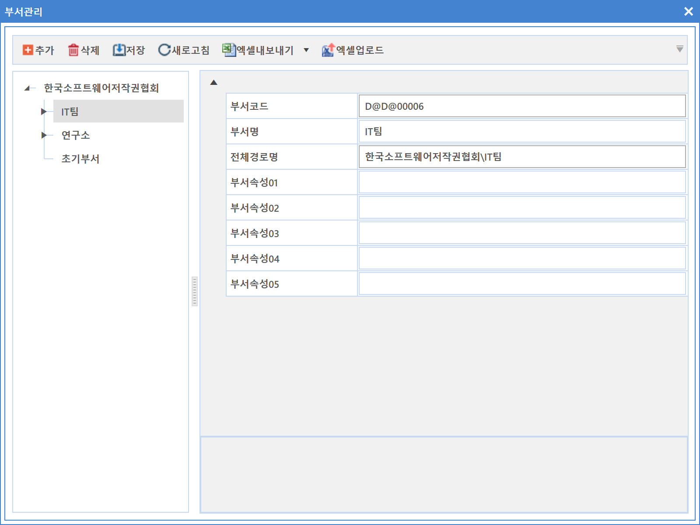
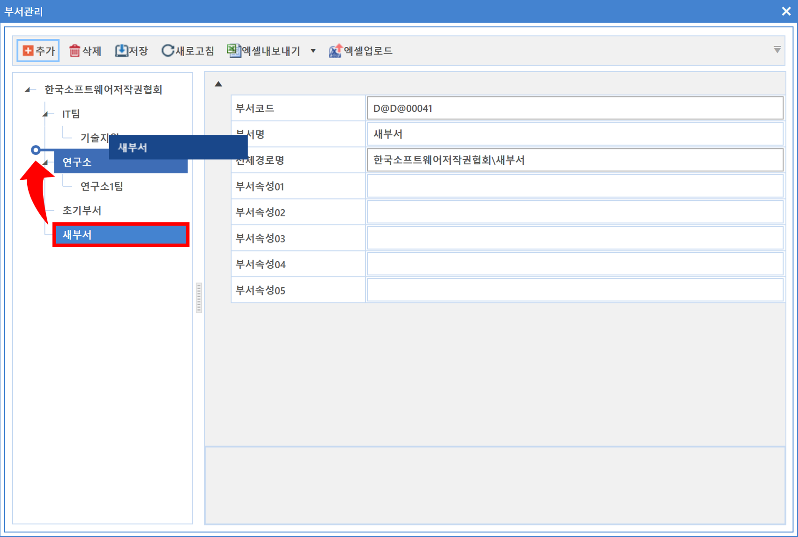
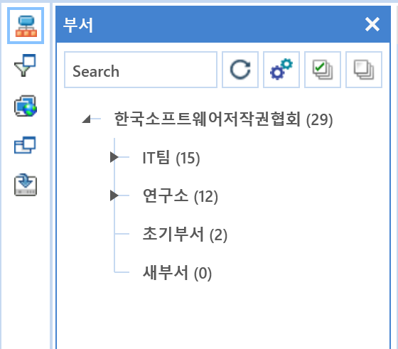
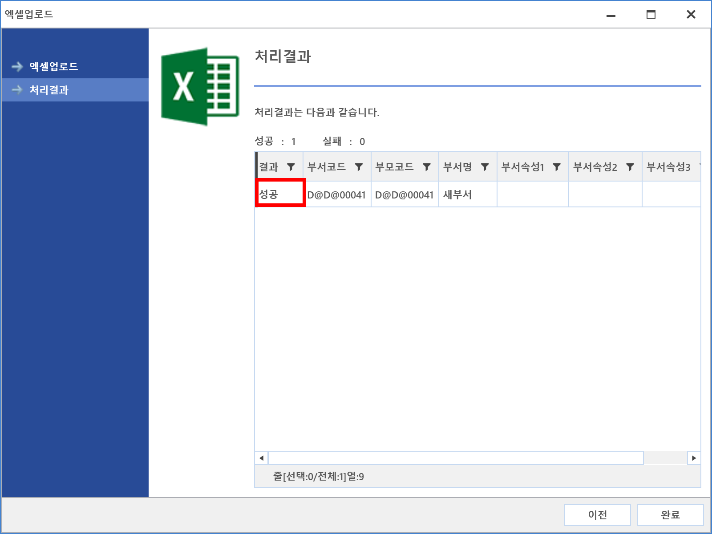
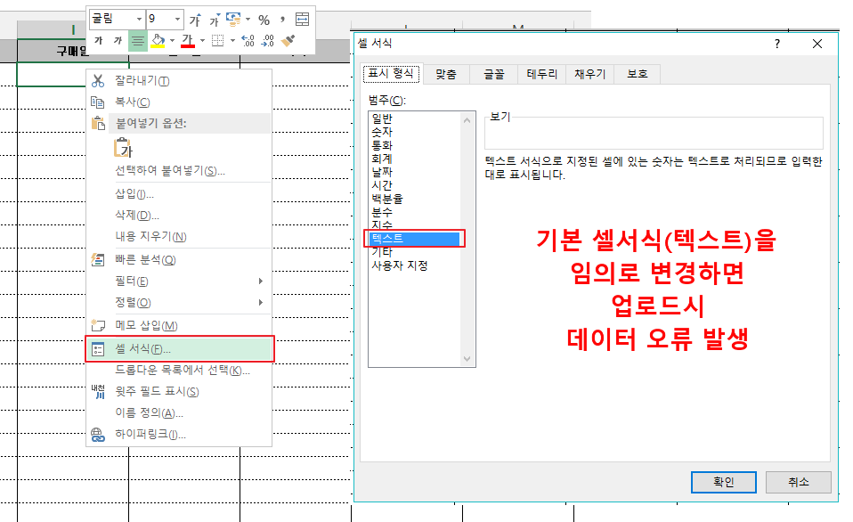

8-2-1. 부서관리
8-2-1. 부서관리
Source: https://www.sweeper.or.kr/etc/manual/8-2-1.html
8-2-1. 부서관리
8. 설정 ›› 8-2. 정보 설정 ››


부서 조직을 설정 및 입력할 수 있으며, 인사 연동을 하는 경우 자동으로 부서가 생성됩니다.

설정방법
- 추가버튼을 클릭합니다. 새 부서가 생성됩니다.

-
부서 생성 시 선택된 부서의 하위 부서로 생성되므로 설정 시 주의하시기 바랍니다.
-
부서정보를 입력합니다.
-
부서코드 : SWeeper 기준으로 자동 생성됩니다.
- 부서이름 : 부서명칭을 입력합니다.
- 전체경로명 : 전체 경로명이 나타납니다.
-
부서 속성 01 ~ 05 : 추가 정보가 필요할 경우 설정하여 입력합니다.
-
입력이 완료되면 저장 버튼을 클릭합니다.
부서 우선순위 변경
- 생성된 부서 항목을 마우스로 클릭하여 Drag & Drop 할 수 있습니다.

- 상/하위 부서로 이동은 물론, 같은 부서내에서의 우선순위를 지정할 수 있습니다.
참고사항
- 본 메뉴에서는 프린트 기능이 제공되지 않습니다.
- 부서관리는 장비 부서 설정을 기준으로 자동 분류하기 위한 설정입니다.
- 설정된 부서는 조직도에서 나타납니다.

- 부서 또한 파일 업로드를 제공하며, 방법은 5-1-1. 라이선스와 동일합니다.

- 우클릭 엑셀 내보내기시, 해당 PC에 다운받으려는 엑셀 버전이 설치되어 있어야 합니다.
업로드시에는 다운받은 엑셀파일을 임의로 변경하면, 업로드시 실패할 수 있습니다. 정확한 데이터만 입력해 주시기 바랍니다.
다운받은 엑셀파일에서 진한 회색이 된 곳은 필수 입력 컬럼입니다.
붉은색 컬럼은 업로드가 가능하며 검정색 컬럼은 업로드가 불가합니다.
주의사항
내려받은 엑셀샘플 양식의 서식이 변경되면, 업로드시 문제가 될 수 있습니다.
다른 파일에서 Copy & Paste 시, 의도치 않게 서식이 변경되어 오류가 발생됨을 주의하시기 바랍니다.

(대표적인 예)
구매일과 만료일 입력시, 구매일 (텍스트)을 날짜로 변경되었을 경우, 실제 데이터 오류의 예
- 셀서식을 임의로 날짜로 변경

- 업로드시 데이터 오류

© Copyright SWeeper Inc.. All Rights Reserved